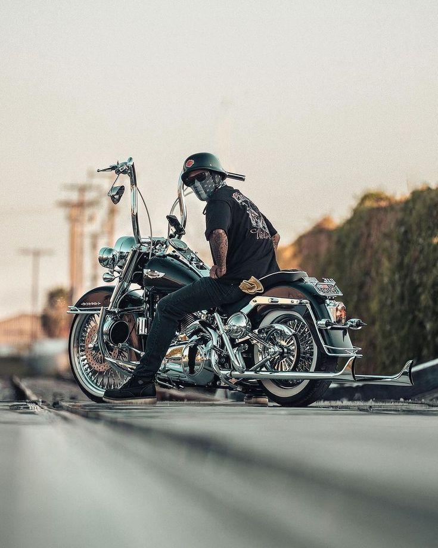

Riding a Harley-Davidson motorcycle is about more than just getting from point A to point B—it's about freedom, community, and the unique feel of the classic V-twin engine. One cool fact about Harley-Davidson is that it was founded in 1903 in Milwaukee, Wisconsin, making it one of America's oldest continuously operating motorcycle manufacturers.
Check out official models, history, and gear at the Official Harley-Davidson Website.
